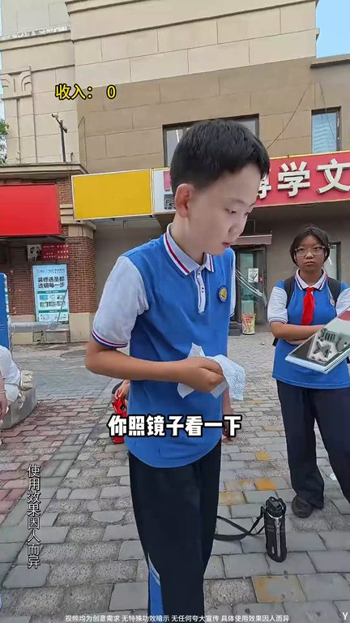
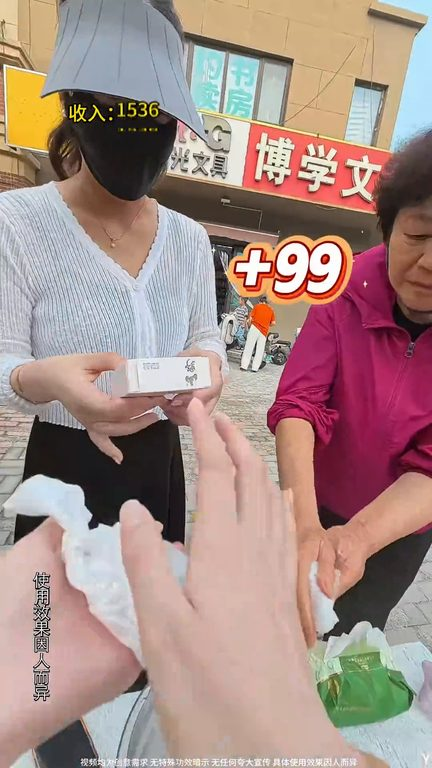
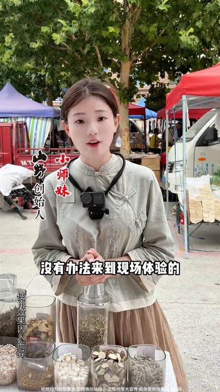

TOP 1 · 代表素材深度拆解
核心放量 强点击
视频为原始素材 HTTPS 链接；点击后加载，建议在网络环境良好时播放。
101.3万素材消耗
3.81%CTR
9.7%类目消耗占比
+1.34pp较类目均值
表现判断
该素材是类目内第 1 名，属于“核心放量”；CTR 高于类目均值。消耗体现承接规模，CTR 体现首屏与定向效率，两项应结合判断，不能仅以单指标下结论。
表达标签
口播三段式证据
开场钩子照镜子看一下我这是养护照洗脸洗澡都能用的你像孩子平常晒得特别多天生的都可以去洗的谢谢我一定算到你的直播间了
中段论证高低要来亲自试试你照镜子看一下二把不说直接拿下一块是不是不会有人吗不会很多人在来过来试试你怎么可能都不相信此时摊前已经围满的人对是不是是不一样
结尾转化对是不是是不一样对太阳皮肤的我觉得是吧是吧是吧有这么多家人的好评还有真实反馈很多见到朋友没有办法来到现场体验的没关系咱们直播间不见不散
有效点
- CTR 3.81% 高于类目均值 2.48%，开场或人群指向具备点击优势
- 口播包含明确到手机制或直播间指令，转化路径较完整
迭代动作
- 保留当前高效钩子，复制 3 个变量版本：人物、首句和首帧分别单变量测试
- 中段每 5–8 秒补一次画面变化或证据点，避免同景口播造成信息疲劳
- 复核功效、绝对化及价格稀缺措辞；增加适用边界和效果因人而异提示
合规关注
钩子建立 · 2.4s

场景/问题展开 · 17.8s

卖点证据 · 41.0s

转化收口 · 56.5s
查看完整口播摘要
照镜子看一下我这是养护照洗脸洗澡都能用的你像孩子平常晒得特别多天生的都可以去洗的谢谢我一定算到你的直播间了真的吗然后回去搜了确实是有点太多看点对小朋友不信邪高低要来亲自试试你照镜子看一下二把不说直接拿下一块是不是不会有人吗不会很多人在来过来试试你怎么可能都不相信此时摊前已经围满的人对是不是是不一样对太阳皮肤的我觉得是吧是吧是吧有这么多家人的好评还有真实反馈很多见到朋友没有办法来到现场体验的没关系咱们直播间不见不散